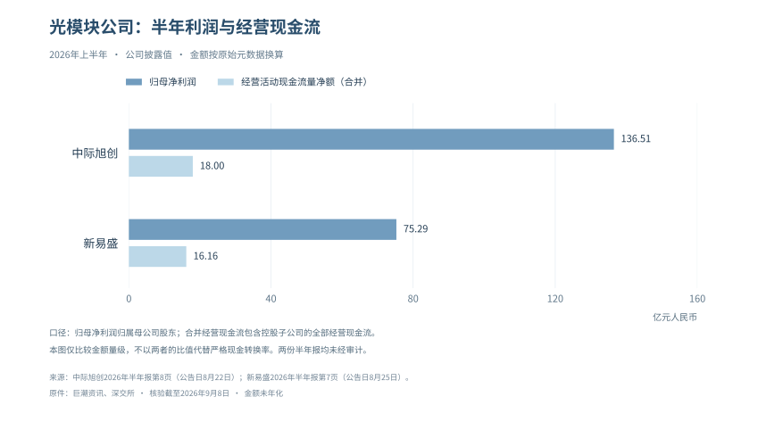
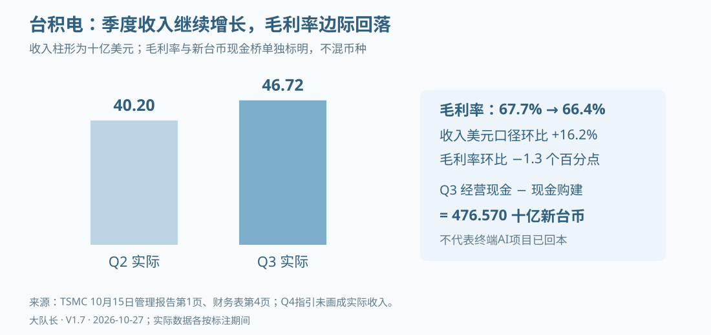

投资者导读：把增长和买入价格放在一起
企业营收增长，并不保证股票回报；行业投资增速下降，也不意味着每家公司都会同步衰退。前者需要检查预期和估值，后者需要拆解份额、产品升级、价格与客户，不能把产业标签当成公司模型。
中国光模块的正式半年报和后续经营公告提供了经营兑现线索，但产品放量、订单能见度、营业利润和现金到账不是同一件事；存储行业又显示利润与存货资金占用可能明显分化。本册沿产品与客户追踪这些差别，再用企业价值和现金折现检验价格，不给缺少完整盈利预测、净债务、股本和有日期现价支持的目标价。
判断需要同时接受两种反例：建设继续增长而现金回收迟迟不来，应提高警惕；客户持续付费、单位成本下降、现金改善，则应上修模型，不能把好坏消息都解释成同一个泡沫结论。
第七部分：公司分化——经营韧性不等于估值安全
维谛的设备销售与现金都在增长，但这还不足以直接回答股票值多少钱：有多少现金来自本期交付，有多少来自客户先付款，下一批订单又要占用多少营运资本？同一轮人工智能投资，云厂、设备商和模型公司承担的资产与合同不同，公司研究应先把这些差异落到报表，再讨论价格。
7.1 用商业模式分组，不给企业预判结局
| 研究组 | 代表公司 | 基本盘与投入位置 | 首要核验问题 |
|---|---|---|---|
| 综合云与应用 | Alphabet、Microsoft、Amazon | 云、广告或软件现金创造与AI建设并存 | 成熟业务现金是否足以承担新增投资，AI贡献能否从整体业务中识别 |
| 广告及终端应用 | Meta、Apple | 广告或终端/服务变现，并含自建或外采AI投入 | 效率收益能否覆盖新增研发、算力与折旧，价格和使用变化是否可归因于AI |
| 计算平台与芯片 | NVIDIA、Broadcom及其他芯片供应商 | 当前销售、软件生态、研发、供应承诺与客户融资关系 | 盈利兑现与回款、客户集中、替代架构和承诺暴露如何变化 |
| 云基础设施与专用算力 | Oracle、CoreWeave等 | 容量建设先投入，收入和租约随交付展开 | 客户信用、合同取消、未起租项目与再融资是否形成错配 |
| 物理设备与系统 | 维谛技术、服务器及网络设备供应商 | 电源散热、系统交付与服务 | 订单能否转收入与现金，增长来自数量、价格还是产品结构 |
公司可以跨组，分组不是风险等级。Tesla的汽车、自动驾驶和机器人需要独立建模，不能因其通常被列入“七巨头”，就把其他公司的云投资风险直接移植过去；表中也不把Oracle、CoreWeave混称为七巨头成员。
7.2 把财报拆成五张小表
第一张记录经营结果：分部收入、营业利润和毛利，标注财季、是否非GAAP、是否包含传统业务。第二张记录现金：经营现金流、现金资本支出和融资租赁付款，统一期间。第三张记录资产与合同：折旧、在建工程、采购承诺、租约、担保、应收和集中度。第四张记录估值：预测年份、净债务与股数、倍数或折现率。第五张记录反证：什么数据会使当前判断失效。
这五张表的数不能任意互换。营业利润和持仓重估应分别进入主营价值与投资资产价值，不能重复资本化；客户投资和增信安排也要核对具体合同，不能据此把该客户全部收入定义成虚假收入。下面用维谛的正式披露走一遍这条计算链，其他公司仍须分别重建自己的输入。
公司经营现金流强，仍可能以过高价格交易；公司现金流暂时为负，也可能因有价值的建设项目而具有正净现值。需要分析的是未来现金收支及其不确定性，不是把一个季度的正负号直接翻译为公司生死。
7.3 企业价值与股权价值的桥
采用企业价值/息税折旧摊销前利润（EV/EBITDA）时，先用目标年度EBITDA乘以可比倍数，得到企业价值，再减去同一估值时点净债务及其他应扣权益项目，除以稀释股数。少数股东权益、租赁负债、养老金或非经营资产是否调整，要与可比公司倍数口径一致。
EV/EBITDA并不自动比市盈率更正确。折旧反映资产消耗，设备需要更新，EBITDA加回折旧后并没有替股东支付这些更新支出；因此资本密集型公司还要看自由现金流。采用企业自由现金流（FCFF）折现时，基本式为税后营业利润加折旧摊销，减资本支出和营运资本增加，再按加权平均资本成本折现。不得同时重复扣除折旧与资本支出，也不能漏掉租赁付款造成的可比性问题。
对于维谛技术这类设备企业，关键是订单转收入、增量利润率、营运资本和维护性投资；对于云商，还要区分服务器、网络、建筑和土地的折旧与经济寿命。拿同一个终值倍数套两类公司，会抹掉研究最重要的差异。
7.3.1 维谛案例：先锁定实际值和公司指引
以下采用维谛技术（Vertiv，VRT）7月29日发布的2026年第二季度结果及6月30日10-Q。第三季度电话会安排在北京时间10月28日23:00，截至本版核验尚未发生，因此下表仍是有明确财季的Q2基线，不代表10月实时经营数据。金额为百万美元，EPS另为美元/股；实际值与前瞻不混为一列。第三季度官方日程
| 项目 | 已实现 | 公司全年2026指引或边界 |
|---|---|---|
| 营业收入 | Q2为3274.3；H1为5923.8 | 13800—14200，尚未实现 |
| 营业利润 | Q2 GAAP为637.9 | 调整后全年3285—3365，不与左列直接同比 |
| 调整后营业利润率 | Q2为22.6% | 全年23.3%—24.3% |
| 经营现金流 | Q2为1099.8；H1为1866.6 | 不能直接乘四作为预测 |
| 调整后自由现金流 | Q2为925.3；H1复算1578.1 | 全年2400—2600 |
| 稀释EPS | Q2 GAAP为1.27，调整后1.52 | 全年GAAP为5.82—5.92，调整后6.65—6.75 |
来源：维谛7月29日业绩公告，SEC附件第1—2、5、7页及现金调节表、维谛2026Q2 10-Q，现金流量表第5页及MD&A。调整后指标不是GAAP，也不是本报告已经得到的FCFF；后者还须统一利息、税、租赁和资本支出口径。
9月21日NVIDIA公布DSX Ready资格计划，维谛列入CDU（冷却液分配单元）参与方，初期覆盖储能系统与液冷设备。资格计划是产品进入生态的证据，不能替代具体场站设计、客户订单或验收，更不能据此上调上述收入和EPS指引；下一步应取得订单、交付及毛利信息，再落入模型。NVIDIA DSX Ready说明
7.3.2 现金强在哪里，又有多少可以重复
H1公司口径调整后自由现金流可复算为1866.6−285.9−2.6=1578.1，后两项分别为资本支出和资本化软件投入。若全年2400—2600的公司指引成立，下半年隐含贡献是821.9—1021.9，而不是把Q2的925.3乘四得到3701.2。这是原指引的算术拆解，不是我们另做了一份预测。

10-Q现金流量表说明了强现金的一部分来源：上半年营运资本净提供678.8，其中递延收入变化贡献1822.7，应收账款和存货分别占用644.2及1048.0，应付账款提供685.3；其他科目合计后才得到净额。客户先付款可以降低公司的外部融资需要，后续交货与服务仍要支付成本，因此这笔支持不能当成每年固定增加的利润。报表并没有把所有递延收入都标为AI项目订金，也不能把存货增加全判为滞销。维谛10-Q现金流量表第5页、收入附注第10—11页及MD&A
收入端也要过一次算术检验：全年中点14000减去H1的5923.8，隐含H2收入8076.2。模型下一步应按项目验收、产品组合、供应交付和可确认收入拆季度，而不是把全年31%的有机增长指引平均分摊。若交付延后但收款已经发生，收入和现金可能短期反向移动，届时须判断是时间差还是订单取消。
7.3.3 从盈利锚到估值输入，不抢先报目标价
在完整2027年模型尚未建立时，可以先检验一张透明的条件表：用公司2026年调整后EPS指引中点6.70，乘作者假设的25/30/35倍市盈率，得到167.50/201.00/234.50美元。三个倍数没有经过可比公司与历史分位校准，表中数值只说明定价敏感性，不是合理价值区间、价格预测或买卖点。
| 假设调整后市盈率 | 25倍 | 30倍 | 35倍 |
|---|---|---|---|
| 6.70美元调整后EPS对应的条件价格 | 167.50 | 201.00 | 234.50 |
若改用同次公司GAAP EPS中点5.87，30倍对应176.10美元。两者差异首先来自盈利定义，不是自动形成两套可比估值；同行采用的摊销、股权激励与一次性项目调整必须一致。市盈率已经对应股权盈利，不能再从结果扣一次净债务；EV/EBITDA则要先完成企业价值到股权价值的桥，两套算式不能混用。
形成正式估值前，还要补齐2027年的产品收入、正常化利润率、营运资本和维护性投入，再用现金折现检查终值，并取得有日期的现价、净债务和稀释股本。只有这一套输入完整，才有依据把上面的条件演示升级为公司估值结论。当前模型最值得追问的是：预收支持减弱后，交付利润能否继续产生现金，而不只是当前订单是否很多。
7.4 增长能否抵消倍数回落
在净债务与股数暂时不变的简化条件下，企业价值变化倍数等于“盈利变化倍数×估值倍数变化倍数”。例如EBITDA上修20%，估值倍数由20倍降至15倍，企业价值变成基准的90%；当净债务为正且企业价值仍高于净债务时，股权价值跌幅会被放大，净现金公司不适用这一方向。条件式为“每股价值＝（目标期EBITDA×同口径倍数−净债务及其他应扣项目）÷稀释股数”，若有应加非经营资产则另加，不能把企业价值的跌幅直接当成股价跌幅。
这比从历史泡沫类比直接指定个股跌幅更可复核。真实目标价仍需要预测期盈利、资本结构、同口径可比以及明确的情景假设；评价预期涨跌幅还需注明起点价格，采用概率加权时另披露权重依据。本轮不把7月或8月的旧股价重新标成10月27日现价，也不在缺这些输入时给出新的买卖价位。
截至10月27日核验，财政部最新已公布观察日为10月26日：十年期国债收益率5.00%，较10月8日5.22%下降22个基点；对应实际十年收益率2.66%，较2.87%下降21个基点。市场折现基准回落是需要纳入的反方证据，但公司的信用利差、资本结构与项目风险未必同步改善，不等于所有公司WACC同幅下降，更不追溯改变存量固定票息。没有完整的新盈利模型和同日现价，便不能据此给出新目标价。财政部名义收益率，10月26日行、实际收益率，10月26日行
7.5 历史比较能说明什么
互联网、电信设备和页岩油的经验说明，技术扩散与股东回报可以分离，融资条件变化也可能让设备订单急转。但各行业的资产再利用能力、客户现金储备、合同期限和竞争结构不同，历史上某家公司跌了多少，不能作为今天另一家公司同幅下跌的估值模型。
历史类比适合比较传导机制，并检查类比失效的条件。指数回撤则必须按各成分权重、其余公司表现和再平衡计算，不能只列出几个个股跌幅区间就声称已算出指数回撤。
7.6 会改变本章结论的证据
若客户无需新增融资也能稳定付费，未履约订单持续转成现金，供应商扩产同时保持回款与定价，风险应下调；若公司营收仍增长，但依赖更长付款期、客户担保和持续资本注入，增长质量就需要更严的折现或情景假设。两者不宜合成一个不透明的“综合现金流厚度”得分。
本章的结论是公司之间必须分化研究，不是认定某一组股票一定比另一组涨得好。估值起点和后续证据都能推翻这种简单排序。
第六部分：对中国投资者的核心启示
海外资本开支与中国公司的利润之间，至少还隔着产品结构、供应商份额、交付节奏和回款四道关。截至2026年10月27日，台积电Q3正式收入与现金都已增长，光模块公司10月23日公告也给出产品及订单进展；但德明利三季报同时显示利润增长与大量备货占款并存。对中国公司的研究重点，是找到产品升级和份额变化，再判断增长占用了多少资金，不能由海外总投资增速直接代替这两项计算。光模块财务表仍保留已核验H1期间，不把经营公告冒充Q3现金表。台积电Q3业绩、德明利三季报
6.1 用经营条件识别周期
项目何时形成收入、融资能否续接、投资开支能否主动调整，比年份本身更有解释力。某个季度进入研究日历，只代表需要取得新证据；条件没有成立，就不能因为时间到了而宣布周期转折。
周期判断分别跟踪供应商订单和收入是否减速，客户资本支出是否超过可持续现金创造，以及融资压力是否由个别公司扩散到更多信用主体。强需求能够反驳第一条的即时崩塌，却不能自动消除第二条；单名降级也不能自动证明第三条已经发生。
模型公司的融资窗口也要按真实阶段判断。媒体计划、秘密递交申请、公开递表、注册生效和实际发行不是同一阶段，锁定期及售股安排还要读取正式条款；不能用计划中的IPO日期串出一条必然的资金流出与市场下跌路径。
6.1.1 如果投资周期比预计更长
物理约束可以让交付延期，既可能让供给扩张放缓、改善最终供需，也可能使在建工程和利息占用继续累积。这两个方向不能一开始就合并为“延迟必然放大”，必须逐项目核对：客户付款是否随交付发生，设备能否转售，合同能否取消，以及建设期利息最终由谁承担。
反方压力测试采用条件而不预设概率迁移。如果单位任务成本下降使需求扩张快于价格下降，成熟业务能持续补贴建设，且回款没有恶化，那么原先偏谨慎的现金回收判断应当弱化。相反，若收入尚未起量、维护性资本开支已经到来，同时客户依赖新融资付费，时间延长会增加资本缺口。
这里须区分两种路径：渐进幻灭指回报低于乐观定价，投资和估值分阶段调整；软着陆指收入与效率逐步吸收前期投入，建设节奏有序回落。交付延期可能通向其中任何一种，本节不替它预设概率，也不据此给出加减仓百分比。
6.2 A股传导需要逐项拆解
| 环节 | 需要验证的传导变量 | 常见误判 |
|---|---|---|
| 光模块 | 集群规模、端口密度、速率升级、单价、良率、客户份额和回款 | 云厂总CapEx增速直接等于模块收入增速 |
| 存储 | DRAM/NAND价格、企业级产品结构、备货成本、库存跌价与回款 | 海外HBM景气直接等于全部国内存储公司现金增长 |
| 服务器与交换设备 | 平台切换、单机价值量、订单转收入、存货和信用条件 | 订单增加等同于利润和现金增加 |
| 电源与散热 | 功率密度、液冷渗透、工程验收、售后服务与项目延期 | 数据中心用电增长意味着全部设备公司同幅受益 |
| 国产计算与基础软件 | 可交付供给、兼容性、迁移成本、客户预算和使用效率 | 出口限制自动带来所有国产公司的高利润 |
| 电力与能源 | 项目位置、并网、供电合同、实际电价与回报机制 | 美国数据中心扩张直接利好所有中国能源公司 |
这些是研究变量，不是行业评级。实际公司模型应从客户和产品出发，再汇总行业暴露；不能先认定某个板块“极高风险”或“确定受益”，再挑数字证明。
光模块：利润增长与现金占用分别核算
中际旭创与新易盛已分别在8月22日、8月25日公告2026年半年报。下表均为2026年上半年，不混用单季或年化数字；金额按原始人民币元除以一亿元换算。
| 公司 | 营业收入（亿元） | 归母净利润（亿元） | 经营现金流净额（亿元） | 收入/归母利润同比 |
|---|---|---|---|---|
| 中际旭创 | 417.78 | 136.51 | 18.00 | +182.49% / +241.70% |
| 新易盛 | 209.10 | 75.29 | 16.16 | +100.34% / +90.98% |
来源：中际旭创2026半年报，第8、26页；新易盛2026半年报，第7、14页。半年度报告未经审计，数字仍须结合其会计附注阅读。

经营兑现已不再只是预期，但现金变化并不一致：中际旭创经营现金流同比下降44.08%，公司解释主要为采购付款增加；新易盛同比增长69.67%，公司解释包括销售回款和税费返还增加。这里比较的是同周期两种财务结果，不能把归母利润与合并经营现金流之比命名为严格的“利润现金转化率”，更不能仅凭差额指控利润失真。
再接上同一合并现金流量表中的“购建固定资产、无形资产和其他长期资产支付的现金”，可以先得到一条不依赖盈利假设的资金简桥。以下均为2026H1、人民币亿元，先用原始元数相减，再四舍五入。
| 公司 | 经营现金流净额 | 现金购建长期资产 | 两项相减 | 这一步能够判断什么 |
|---|---|---|---|---|
| 中际旭创 | 18.00 | 48.02 | −30.02 | 当期经营现金未覆盖该项建设支出 |
| 新易盛 | 16.16 | 12.64 | +3.53 | 当期经营现金覆盖该项支出后仍有余量 |
中际旭创算式为（1,799,674,832.02−4,802,161,195.37）÷1亿；新易盛为（1,616,408,524.15−1,263,841,519.77）÷1亿。新易盛展示数16.16减12.64为3.52，与原值计算后显示3.53相差0.01，来自舍入，不是另加了一项现金。中际旭创半年报第60页、新易盛半年报第44页
这不是企业自由现金流（FCFF），也不是全部融资需求：尚未纳入其他投资、分红、偿债和融资支出，负差额可以由存量现金或其他资金支付，正差额也不等于可全部分给股东。现金购建支出已在这里扣除，不能再拿该差额去减同一笔建设支出。
截至10月27日，尚未完成从合并净利润、非现金项目到营运资本变动的逐项调节，也没有把现金购建拆成维护性和扩张性支出。因此暂不能把30.02亿元归因于某一客户拖款，或称3.53亿元为正常化年度现金。下一期应检查应收账龄及期后收款、存货周转与减值、预付款和应付的现金影响；资产负债表期末余额之差还可能含汇兑、并购及非现金变动，不直接充当现金流。
模型的双向调整有具体落点：如果备货随交付下降、应收按合同收回，便降低后续营运资本占用假设；若账龄延长和库存减值持续增加，则下调可收回现金，并重估扩产计划。两种变化都比单看利润与现金的量级差更有解释力。
光模块：订单能见度尚不能代替现金表
10月23日的三份经营公告把产品进展推到更近的观察时点：中际旭创披露海外重点客户订单覆盖2027年，部分客户提供2028年需求指引；新易盛称800G和1.6T已是主要出货产品；天孚通信称用于CPO的FAU、ELS相关产品已稳定量产。这些消息不等于全部订单不可取消，更不等于已经确认收入或收款。天孚2027—2029年股权激励增长目标也不是已实现业绩或公司盈利预测，截至10月27日，证据集中尚未取得三家公司正式Q3财务报告，不据此补齐现金。中际旭创公告，第1—2页、新易盛公告、天孚通信公告，第2页
存储：一份正式季报与一份预告不能合并为行业结论
德明利10月26日公开三季报，Q3收入116.45亿元、归母利润27.29亿元；前三季累计归母利润87.46亿元、经营现金−136.91亿元，期末存货289.86亿元，较年末增加219.28亿元。其前三季经营现金减现金购建长期资产，按原始元数计算为（−13,690,577,650−500,131,017.67）÷1亿＝−141.91亿元；这个缺口表明备货与扩张依赖资金支持，不足以认定虚假利润。合并现金与归母利润不构成严格同权益口径比率，累计现金也不能冒充Q3单季现金。德明利三季报，第2—4、18—19页
江波龙10月15日则是预告：前三季预计收入380—400亿元、归母利润140—149亿元，公告称Q3经营现金转正但未给出金额，并指出DRAM、NAND涨幅已收窄。前者支持利润方向，后者要求下调线性外推的把握，二者都不能代替正式现金表。由此应把“行业涨价”拆成公司采购价格、库存交付与收款的时间差；德明利和江波龙的不同情况不能简单平均，更不能由美光或韩国HBM业绩给国内全板块统一上修。江波龙业绩预告，第1—2页
6.3 编程工具与软件公司的传导
编程工具按席位收费的收入，只覆盖软件生产工具市场的一部分。若企业把节省的工时用于更多项目、采用按用量计价的代理或采购交付服务，市场边界会改变；反过来，个人用户使用频率低、付费席位流失或高频用户推理成本过高，也会削弱利润。
因此“工具更便宜”既不是外包公司必然受损的证据，也不是工具厂商拥有无限市场的证据。软件公司的模型至少要分合同金额、交付人时、人员成本、工具和算力成本、验收周期，以及客户是否要求分享效率收益。项目毛利可以先按“合同收入−交付人工−工具与算力−其他交付成本”建立，再另扣销售、研发与管理费用；节省工时只有变成新增交付或实际成本下降，才进入盈利，而不从全体开发者人数直接推公司收入。
6.4 客户集中与融资暴露
客户集中度、关联投资和收入质量应分栏记录。供应商向客户投资，并不能证明所有后续收入虚假；同样，已经签订采购合同，也不代表客户具备无条件履约的现金能力。
研究底稿应列出具名客户、已确认收入、未履约合同、收款期限、担保或增信、投资余额与取消条件。未披露客户身份的收入不能由研究者擅自分配给某一家云厂，未披露的循环收入占比应保留缺失；客户集中和融资关联可以提示核验方向，不能直接生成行业统一风险排名。
6.5 公司估值怎样承接行业判断
先形成产品收入预测，再由毛利、费用、折旧、税和营运资本形成利润及现金流，最后讨论估值倍数。产业判断可以改变这些输入，却不能越过盈利模型直接产生某个精确跌幅。
例如只为说明敏感性的假设公司：基准EBITDA为100、企业价值倍数为20倍，净债务200、稀释股数100，则每股价值为18。若EBITDA增长20%至120、倍数回落25%至15倍，企业价值变成1800，每股价值为16，较18下降11.1%。盈利上涨与股价估值下降完全可能同时发生；这里的数字是教学假设，不是任何真实公司的目标价。
| EBITDA（基准=100） | 15倍 | 20倍 | 25倍 |
|---|---|---|---|
| 80 | 10 | 14 | 18 |
| 100 | 13 | 18 | 23 |
| 120 | 16 | 22 | 28 |
表中每股价值统一按“EBITDA×倍数−200，再除以100”计算。净债务、股数固定只是为了看清两个变量；真实模型须同步处理现金生成、融资和稀释，并用现金流折现检验终值是否承担过多价值。
6.6 跨境工具：通道规则不能替代研究
港股通南向交易和大湾区跨境理财通是两种不同制度，不能把市场每日额度当成个人可持有、可积攒的配额。港交所2026年7月6日版常见问题说明，每日额度按净买盘管理、未使用部分不结转；因此持有股票不产生可以保存的个人历史额度。港交所《互联互通常见问题》，2026-07-06，第15—16页
场内QDII的溢价必须用同一时点可比净值、汇率和交易价格计算。跨时区净值滞后、停申购和二级流动性会影响结果，未取得同日可比样本时，不能给全市场一个“当前普遍溢价”区间。基金规模增长或市场回撤也不保证某一天溢价必然归零。
本报告不对读者的跨境投资资格、汇款用途或适用产品作个别认定。需要交易时，应另按最新官方规则及产品说明核实，而不是根据研究观点提前安排通道或仓位。
6.7 截止日之后，需要取得哪些证据
截至10月27日，Meta、台积电、ASML和德明利已经公开的结果进入相应财务论证，未来日历只保留尚待发生的官方节点。电话会时间不等于新闻稿精确发布时间，预约也不是业绩承诺；以下统一为北京时间，海外公司原日程仍可能调整。
| 北京时间 | 官方未来节点 | 需要核验的变量 | 对中国公司的传导限制 |
|---|---|---|---|
| 10月28日08:00 | SK海力士Q3电话会，新闻稿在此前发布 | HBM与一般存储、现金、资本支出 | 产品结构和客户不同，不能替国内公司确认利润 |
| 10月28日23:00 | Vertiv Q3电话会，财报美股开盘前发布 | 订单、现金、液冷交付与验收 | 海外资格认证、订单与中国供应商收入不同 |
| 10月29日02:00 | FOMC决议，02:30发布会 | 利率决策与融资条件 | 影响折现率和需求预算，不直接决定供应商订单 |
| 10月29日04:30 | Alphabet Q3电话会 | Cloud经营、资本支出、证券重估 | 需继续核具体采购产品和供应商份额 |
| 10月29日05:30 | Microsoft FY27Q1电话会 | Azure、现金CapEx、租赁、经营现金 | 总投资包含多类资产，不能等比例推光模块收入 |
| 10月29日09:00 | 三星Q3完整业绩电话会 | 分部盈利、经营现金、资本支出 | 初步合并利润不等于HBM独立利润 |
| 10月30日05:00 | Amazon Q3电话会 | AWS、非营业收益、滚动自由现金流 | 投资重估与真实云采购分开处理 |
来源：SK海力士10月21日邀请函、Vertiv10月14日日程、美联储2026年10月日历、Microsoft10月7日日程、三星IR日历、Amazon10月15日日程。Alphabet时间采用10月6日公司原样分发稿：原站访问受阻，分发稿不是独立第二来源，证据状态为部分一手访问。
没有确切发布日期的国内公司，不填写来自预约传闻的精确时刻。光模块下一份正式季报应重点核验应收、存货、回款、现金购建及合同负债；存储公司则需要进一步核对采购价格与库存变现速度。对照表的目的，是让新证据改变收入、利润或现金假设，不是每逢财报就机械调整仓位。
台积电Q3收入46.72B美元、毛利率66.4%，新台币经营现金919.776B与现金购建443.206B相减为476.570B，说明其自身需求和现金已经兑现；HPC收入占比68%却不能作为纯AI占比。Q4收入52.3—54.3B美元仍为指引，不能从供应商的强现金一步跳到中国光模块、设备或存储公司的盈利上修，仍要回到产品、份额、价格和回款。台积电10月15日Q3管理报告，第1—2页、Q3现金流表，第4页

6.8 政策冲击的归因
出口管制影响可采购产品、部署地点和技术迁移成本，资本市场监管影响交易通道，两者不能合并成一个“AI风险事件”。对具体公司，依次核对产品是否在规则范围、许可证条件、实际可交付时间与替代方案，再调整销量、成本和交期。政策讨论稿不等于生效规则，获准采购也不等于已经交付；涉及处罚金额、产品禁令和实施日期时，必须保留对应监管文件，不把未核实的金额写入风险损失。
6.9 本章可能判断错在哪里
供应商份额提升和产品升级可能抵消行业投资减速，这是宏观外推最容易漏掉的反方；营运资本也有季节性，仅看半年现金不足以给全年结论。与此同时，增长真实不能保护过高的买入估值，政策支持也不能保证单一公司的产品被采用。下一次核验应允许这些方向同时进入模型，而不是只寻找支持原观点的数字。
参考资料索引
本册按URL去重收录23项参考资料，保留正文中的就近链接，下面按首次引用顺序集中列出完整网址，便于打印后追溯。名称采用已核对的公司、报告期与文档类型或正文来源简称，并非一律为官方原标题；资料的期间、核验程度和访问限制以对应段落为准，不表示全部旧引文都在本轮重新取得原件。
-
Vertiv10月14日日程 · investors.vertiv.com
https://investors.vertiv.com/news/news-details/2026/Vertiv-Announces-Date-of-Third-Quarter-2026-Earnings-Release-and-Conference-Call/
-
维谛7月29日业绩公告，SEC附件第1—2、5、7页及现金调节表 · www.sec.gov
https://www.sec.gov/Archives/edgar/data/1674101/000162828026050323/q22026exhibit991vrt07292026.htm
-
维谛10-Q现金流量表第5页、收入附注第10—11页及MD&A · www.sec.gov
https://www.sec.gov/Archives/edgar/data/1674101/000162828026050609/vrt-20260630.htm
-
NVIDIA DSX Ready说明 · blogs.nvidia.com
https://blogs.nvidia.com/blog/dsx-ready-ai-factories-power-cooling/
-
财政部名义收益率，10月26日行 · home.treasury.gov
https://home.treasury.gov/resource-center/data-chart-center/interest-rates/TextView?field_tdr_date_value_month=202610&type=daily_treasury_yield_curve
-
实际收益率，10月26日行 · home.treasury.gov
https://home.treasury.gov/resource-center/data-chart-center/interest-rates/TextView?field_tdr_date_value_month=202610&type=daily_treasury_real_yield_curve
-
台积电Q3业绩 · investor.tsmc.com
https://investor.tsmc.com/english/quarterly-results/2026/q3
-
德明利三季报，第2—4、18—19页 · disc.static.szse.cn
https://disc.static.szse.cn/download/disc/disk03/finalpage/2026-10-26/e8eabd45-e97f-4bed-b05d-27f58665dc50.PDF
-
中际旭创2026半年报，第8、26页 · static.cninfo.com.cn
https://static.cninfo.com.cn/finalpage/2026-08-22/1225491753.PDF
-
新易盛2026半年报，第7、14页 · static.cninfo.com.cn
https://static.cninfo.com.cn/finalpage/2026-08-25/1225499406.PDF
-
中际旭创公告，第1—2页 · static.cninfo.com.cn
https://static.cninfo.com.cn/finalpage/2026-10-23/1225617691.pdf
-
新易盛公告 · static.cninfo.com.cn
https://static.cninfo.com.cn/finalpage/2026-10-23/1225617676.pdf
-
天孚通信公告，第2页 · static.cninfo.com.cn
https://static.cninfo.com.cn/finalpage/2026-10-23/1225617692.pdf
-
江波龙业绩预告，第1—2页 · static.cninfo.com.cn
https://static.cninfo.com.cn/finalpage/2026-10-15/1225607002.PDF
-
港交所《互联互通常见问题》，2026-07-06，第15—16页 · www.hkex.com.hk
https://www.hkex.com.hk/-/media/HKEX-Market/Mutual-Market/Stock-Connect/Getting-Started/Information-Booklet-and-FAQ/FAQ/FAQ_Cn.pdf
-
SK海力士10月21日邀请函 · news.skhynix.com
https://news.skhynix.com/en/q3-2026-earnings-conference-call-invitation/
-
美联储2026年10月日历 · www.federalreserve.gov
https://www.federalreserve.gov/newsevents/2026-october.htm
-
Microsoft10月7日日程 · news.microsoft.com
https://news.microsoft.com/source/2026/10/07/microsoft-announces-quarterly-earnings-release-date-69/
-
三星IR日历 · www.samsung.com
https://www.samsung.com/global/ir/ir-events-presentations/events/
-
Amazon10月15日日程 · press.aboutamazon.com
https://press.aboutamazon.com/2026/10/amazon-com-to-webcast-third-quarter-2026-financial-results-conference-call
-
10月6日公司原样分发稿 · www.marketscreener.com 新闻分发或转载平台，不能视为新增独立经营证据。
https://www.marketscreener.com/news/alphabet-announces-date-of-third-quarter-2026-financial-results-conference-call-ce785dd9dc89f62d
-
台积电：2026年第三季度管理报告 · investor.tsmc.com 2026-10-15；季度经营数据。
https://investor.tsmc.com/english/encrypt/files/encrypt_file/reports/2026-10/f83780000ddc0c3b48e57a87eab6814c4ab35058/3Q26%20ManagementReport.pdf
-
台积电：2026年第三季度财务报表 · investor.tsmc.com 现金流核对见原表第4页；财务报表使用新台币百万元。
https://investor.tsmc.com/english/encrypt/files/encrypt_file/reports/2026-10/3a94d1034b9e6b22446b674f7aaf3d088a12a193/FS.pdf